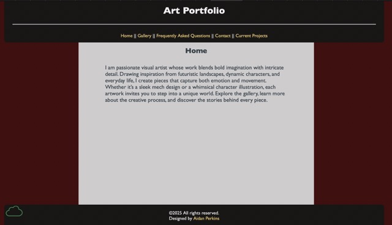

Peer Review 1
Student Evaluated: Perkins, Aidan

Screenshot of Aidan Perkins' Client website
Evaluation
- There are no spaces or upper-cases in the file/folder names, including scripts, images, etc...
- Page are contrast and easy to read
- They have a css file for all pages
- Page have Header, Main, Footer
- They have 5 pages
- Page start with h2
- They are interactive
- They have images
- Overall, all the page look good and meet the requirement, I would suggest to make the image smaller and add more text to your F&Q page.